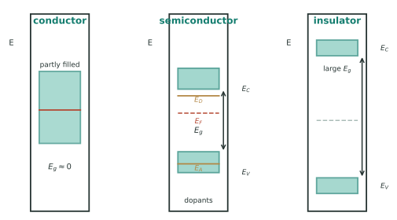
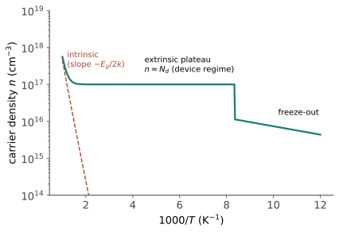
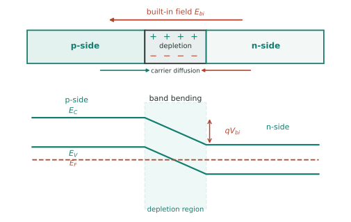

功能 I · 电子材料
从这里开始，材料不再只是"扛力的东西"，而是功能的载体。电子材料是其中最成功的一支：一块提纯到 99.999999999% 的硅，掺进十亿分之一的杂质，就能计算——结构 III 的"缺陷决定命运"在此达到极致。本页讲材料侧的机理（能带、掺杂、载流子），器件与制程流程见芯片站（:8089）。
1. 能带：为什么有导体、半导体与绝缘体
孤立原子的能级，在晶体中因周期势场展宽成能带（🔗 物理站固体物理给 Bloch 定理的严格推导）。价带与导带之间是带隙 \(E_g\)——三分类的唯一标准：
| 类别 | 带隙 | 电导率 \(\sigma\) (S/m) | 例 |
|---|---|---|---|
| 导体 | 无（带部分填充） | \(10^7\) | Cu、Al |
| 半导体 | 0.5–3 eV | \(10^{-6}\)–\(10^{4}\)（可调） | Si (1.12)、GaAs (1.42)、GaN (3.4) |
| 绝缘体 | > 4 eV | \(<10^{-10}\) | SiO₂ (~9)、Al₂O₃ |
\(\sigma = nq\mu\)（载流子浓度 × 电荷 × 迁移率）——半导体的全部魔法在于 \(n\) 可以被掺杂调节十个数量级以上，而金属的 \(n\) 是固定的。

2. 掺杂：十亿分之一的杠杆
n 型：Si（4 价）掺 P（5 价），多一个电子进导带；p 型：掺 B（3 价），留一个空穴。掺杂浓度 \(10^{15}\)–\(10^{20}\) cm⁻³ 对比硅原子密度 \(5\times10^{22}\) cm⁻³——百万分之一到十亿分之一的杂质，把电阻率改变六个数量级。

本征载流子 \(n_i \propto \exp(-E_g/2k_BT)\)——这一条不等式统治功率电子的技术路线：Si 器件结温上限约 150–175 °C，SiC/GaN 可上到 200 °C 以上并支持更高电压更小体积，这就是电动车与快充电源全面转向宽禁带的材料学原因（🔗 芯片站前沿页）。
材料纯度与晶体完美度：电子级硅需 11N 纯度（区熔提纯）+ 单晶（Czochralski 提拉）——晶界会散射载流子、缺陷会成为复合中心。这是全课唯一"完美晶体是目标"的场合（其余场合都在设计缺陷）——例外本身就是主线的注脚：要什么性能，就设计什么缺陷（包括不要缺陷）。
3. 结与界面：功能诞生的地方
pn 结：n 与 p 接触 ⇒ 载流子扩散 ⇒ 耗尽区内建电场 ⇒ 单向导电。几乎所有电子器件都是界面的产物：二极管（一个结）、双极晶体管（两个结）、MOSFET（金属-氧化物-半导体三层，靠栅压调控沟道——SiO₂ 是天赐的完美介质，硅的历史性优势有一半来自它的氧化物）、LED/激光（直接带隙半导体的复合发光——GaN 蓝光 LED 的 2014 诺奖是材料学胜利：难在 p 型 GaN 掺杂与衬底失配）、太阳能电池（前沿 II）。

导电聚合物一瞥：共轭主链 + 掺杂可导电（2000 诺奖）——柔性显示、有机太阳能、生物电子的基础；性能不及无机但可溶液加工、可弯折，走的是"够用 + 便宜 + 柔性"路线。
4. 导体与互连材料
铜取代铝做芯片互连（1997 IBM）：电阻率低 40%、抗电迁移更好——但铜会毒化硅，需扩散阻挡层（TaN）。电迁移（高电流密度下电子风推动原子迁移 ⇒ 断路）是互连的头号寿命杀手，本质是扩散（热力 II 的老朋友在电场下的变形）。
超导一瞥：零电阻 + 迈斯纳效应；低温超导 NbTi（MRI 磁体的主力）、高温超导 YBCO/BSCCO（液氮温区，带材化艰难）；室温超导是长期悬案，历次宣称多未经复现——读到相关新闻时先等复现（本站前沿页纪律）。
5. 数字感与反直觉
- 电阻率跨度：Cu \(1.7\times10^{-8}\) Ω·m → 本征 Si ~\(2\times10^3\) → 石英 \(>10^{16}\)——24 个数量级，人类可控物理量中跨度最大者之一；
- 掺杂浓度 \(10^{16}\) cm⁻³ ≈ 每 500 万个硅原子里一个杂质；
- 反直觉：半导体的电导率随温度升高（更多载流子被激发）而金属相反（声子散射加剧）——测温度系数就能判断材料类型；最纯净的硅几乎不导电，"半导体导电"全靠人为掺入的缺陷。
【研】对标 Kittel《固体物理》、Sze《Physics of Semiconductor Devices》；有效质量、费米-狄拉克统计、载流子输运与复合模型是研究生地基。🔗 与芯片站分工：本页讲材料机理，那边讲器件结构与制程流程。
下一页：材料的另外两种"电磁天赋"——磁性与介电，从变压器铁芯到手机里的上千个电容。